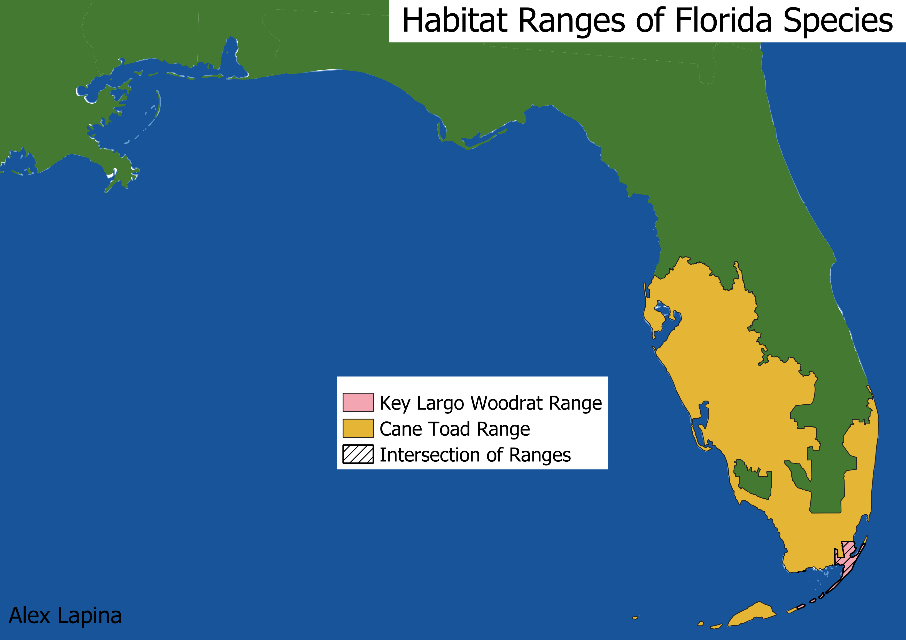

Homework 8: Geoprocessing Analysis
Alex Lapina
Below is a map of the habitat ranges of two different species living in Florida. First is the cane toad, an invasive species native to South and Central America. The other species is the key largo woodrat, an endangered species in Florida that happens to be on the menu for cane toads. I wanted to use geoprocessing tools to find out how an invasive species like the cane toad will have an effect on an endangered species like the key largo woodrat. To make this map, I used the clip feature first to trim both habitat ranges so that they are limited to the land. Next, I used the intersection tool to find the area where both ranges existed. It is visually evident that the remaining woodrats in Florida are extremely vulnerable to predation by cane toads, putting them at greater risk of extinction.

Data used for this project
USGS Gap Analysis Project
Information about Cane Toads